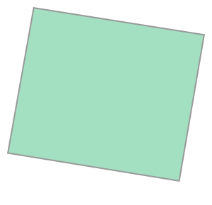
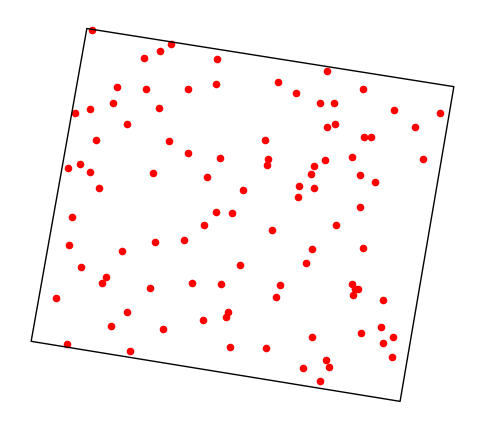
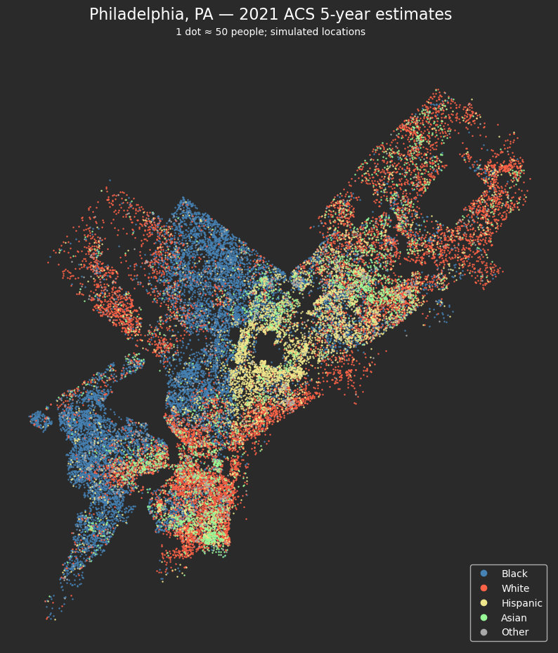

import sqlite3
conn = sqlite3.connect(":memory:")
cur = conn.cursor()Week 10B: Databases, Census APIs, and demographic maps
Use SQL to manage records, query Census demographic data, and build a racial dot map for Philadelphia.
Lecture guide: Database basics → Census API fundamentals → Query demographic data → Join geometries → Build a dot map
Today’s agenda
- Practice relational database operations with SQLite.
- Query Census metadata and ACS estimates with
requests. - Download Census boundary files and join them to demographic records.
- Generate a reproducible racial dot map for Philadelphia.
Part 1: Database basics with SQLite
Relational databases organize data into tables. SQL lets us create tables and insert, query, update, or delete records. Common database systems include SQLite, PostgreSQL, MySQL, DuckDB, and Microsoft SQL Server.
For spatial data, PostgreSQL can use the PostGIS extension to store and query geographic objects. Databases help manage large datasets and repeated queries. Recently, the DuckDB has become an emerging DB for spatial data.
We’ll use a small SQLite database of student records to practice the basic SQL operations.
Step 1: Connect to a SQLite database
Use an in-memory database for this exercise. Rerunning the setup starts fresh and does not modify an existing students.db file. A file-backed connection such as sqlite3.connect("students.db") persists records between sessions.
Step 2: Create a table
cur.execute("""
CREATE TABLE IF NOT EXISTS students (
id INTEGER PRIMARY KEY AUTOINCREMENT,
name TEXT,
major TEXT,
gpa REAL
)
""")
conn.commit()Step 3: Insert records
# Fixed IDs make this cell safe to rerun without duplicate students.
cur.executemany(
"INSERT OR REPLACE INTO students (id, name, major, gpa) VALUES (?, ?, ?, ?)",
[(1, "Alice", "Urban Studies", 3.8), (2, "Bob", "Environmental Science", 3.5)],
)
conn.commit()Step 4: Query records
cur.execute("SELECT * FROM students")
rows = cur.fetchall()
for row in rows:
print(row)(1, 'Alice', 'Urban Studies', 3.8)
(2, 'Bob', 'Environmental Science', 3.5)Step 5: Update and delete records
cur.execute("UPDATE students SET gpa = 3.9 WHERE name = 'Alice'")
cur.execute("DELETE FROM students WHERE name = 'Bob'")
conn.commit()
print(cur.execute("SELECT * FROM students").fetchall())
# Close when finished with the exercise.
conn.close()[(1, 'Alice', 'Urban Studies', 3.9)]Set up the geospatial Python tools
Use the course geospatial environment with requests, pandas, NumPy, GeoPandas (1.0 or newer), Shapely (2.0 or newer), and Matplotlib. The optional interactive preview uses folium and mapclassify.
If needed, install dependencies before the lecture in the notebook’s environment, then restart its kernel:
%pip install "geopandas>=1.0" "shapely>=2.0" pandas numpy matplotlib requests folium mapclassifyKeep package installation separate from the data-analysis cells so the kernel uses a consistent environment throughout the lesson.
import os
from getpass import getpass
from io import BytesIO, StringIO
import geopandas as gpd
import numpy as np
import pandas as pd
import requests
from matplotlib import pyplot as plt
from shapely import contains_xy
from shapely.geometry import Pointpd.options.display.max_columns = 999
pd.options.display.max_colwidth = NonePart 2: Census API fundamentals
US Census data is foundational
- Rich data sets with annual releases
- Decennial results plus American Community Survey (ACS) results
- Wide range of topics covered: sex, income, poverty, education, housing
Browse data at data.census.gov

Example: Poverty data

Understand the API request
https://api.census.gov/data/2021/acs/acs1?get=NAME,B17001_002E&for=state:*
- Base endpoint: https://api.census.gov/data/2021/acs/acs1
- Request parameters: “get”, “for”
Current requirement: Census data queries need an activated API key. The example URL above illustrates the parameters; add your key through Python below rather than publishing a key in a notebook or link.

Find variable names
The census provides web-based documentation:
- Overview of all data tables: https://api.census.gov/data.html
- All data tables for 2021: https://api.census.gov/data/2021.html
- All variables for 2021 ACS 5-year data set: https://api.census.gov/data/2021/acs/acs5/variables.html
Census API reference guide
https://www.census.gov/data/developers/guidance/api-user-guide.html
Access Census data with Python
Use requests.get() to send queries directly to the Census API, then convert the JSON responses into pandas DataFrames. This keeps the endpoint, query parameters, and response checks visible.
Census requires a free, activated API key for data queries: official guidance. We will set up the key before requesting demographic estimates.
A missing key can return an HTML Missing Key page with HTTP status 200. Check the response before calling .json(); otherwise parsing the HTML as JSON raises JSONDecodeError. The census_json() helper below performs these checks.
Part 3: Query Census data and join geometries
Goal: A racial dot map for Philadelphia

Source: Washington Post
Let’s make this for Philadelphia in Python!
Set up explicit Census API requests
ACS_YEAR = 2021
acs_endpoint = f"https://api.census.gov/data/{ACS_YEAR}/acs/acs5"
def census_json(url, params=None):
"""Request Census JSON, with useful errors and no API key in messages."""
params = dict(params or {})
try:
response = requests.get(url, params=params, timeout=60)
except requests.RequestException:
raise RuntimeError("Census request failed. Check your connection and retry later.") from None
text = response.text.strip()
if "missing key" in text.lower() or "invalid key" in text.lower():
raise RuntimeError("Census requires a valid, activated API key. Rerun the key setup cell.")
if not response.ok:
# Redact the key before showing the API's explanation.
detail = text[:500].replace(params.get("key") or "<no-key>", "[redacted]")
raise RuntimeError(f"Census HTTP {response.status_code}: {detail}")
if text.startswith("<"):
raise RuntimeError("Census returned HTML, not JSON. Check key activation or service availability.")
try:
payload = response.json()
except ValueError:
raise RuntimeError("Census returned a non-JSON response. Retry later and check the endpoint.") from None
if isinstance(payload, dict) and "error" in payload:
detail = str(payload["error"]).replace(params.get("key") or "<no-key>", "[redacted]")
raise RuntimeError(f"Census API error: {detail}")
return payload# Public metadata requests do not need your personal data-query key.
metadata = census_json(acs_endpoint + ".json")Explore Census metadata directly
- Dataset descriptions: the endpoint’s
.jsonmetadata catalog. - Variables:
variables.jsonbeneath the endpoint. - Geographic hierarchy:
geography.jsonbeneath the endpoint. - County FIPS codes: the Census Bureau’s public county reference, shown below.
Use census_json() to load the JSON metadata into ordinary Python dictionaries, then organize the records with pandas.
Note: we can change pandas display options to see all rows/columns and large cells
# UNCOMMENT TO SEE ALL ROWS/COLUMNS IN DATAFRAMES
# pd.options.display.max_rows = 9999
# pd.options.display.max_colwidth = 200Step 1: Choose the Census dataset
- Today, we’ll use the 5-year American Community Survey (2021 example dataset)
- Other common datasets:
- 1-year ACS datasets as well (2022 example dataset)
- 10-year decennial survey (2020 example dataset)
available = pd.DataFrame(metadata["dataset"])
available["dataset_id"] = available["identifier"].str.rsplit("/", n=1).str[-1]
available = available.set_index("dataset_id")
available[["title", "description"]].head()| title | description | |
|---|---|---|
| dataset_id | ||
| ACSDT5Y2021 | American Community Survey: 5-Year Estimates: Detailed Tables 5-Year | The American Community Survey (ACS) is an ongoing survey that provides data every year -- giving communities the current information they need to plan investments and services. The ACS covers a broad range of topics about social, economic, demographic, and housing characteristics of the U.S. population. Summary files include the following geographies: nation, all states (including DC and Puerto Rico), all metropolitan areas, all congressional districts, all counties, all places, and all tracts and block groups. Summary files contain the most detailed cross-tabulations, many of which are published down to block groups. The data are population and housing counts. There are over 64,000 variables in this dataset. |
| ACSCP5Y2021 | American Community Survey: 5-Year Estimates: Comparison Profiles 5-Year | The American Community Survey (ACS) is an ongoing survey that provides data every year -- giving communities the current information they need to plan investments and services. The ACS covers a broad range of topics about social, economic, demographic, and housing characteristics of the U.S. population. The Comparison Profiles include the following geographies: nation, all states (including DC and Puerto Rico), all metropolitan areas, all congressional districts, all counties, all places and all tracts. Comparison Profiles contain broad social, economic, housing, and demographic information. The data are presented as both counts and percentages. There are over 2,400 variables in this dataset. |
| ACSDP5Y2021 | American Community Survey: 5-Year Estimates: Data Profiles 5-Year | The American Community Survey (ACS) is an ongoing survey that provides data every year -- giving communities the current information they need to plan investments and services. The ACS covers a broad range of topics about social, economic, housing, and demographic characteristics of the U.S. population. The ACS 5-year data profiles include the following geographies: nation, all states (including DC and Puerto Rico), all metropolitan areas, all congressional districts, all counties, all places and all tracts. The Data profiles contain broad social, economic, housing, and demographic information. The data are presented as both counts and percentages. There are over 2,400 variables in this dataset. |
| ACSST5Y2021 | American Community Survey: 5-Year Estimates: Subject Tables 5-Year | The American Community Survey (ACS) is an ongoing survey that provides data every year -- giving communities the current information they need to plan investments and services. The ACS covers a broad range of topics about social, economic, demographic, and housing characteristics of the U.S. population. The subject tables include the following geographies: nation, all states (including DC and Puerto Rico), all metropolitan areas, all congressional districts, all counties, all places and all tracts. Subject tables provide an overview of the estimates available in a particular topic. The data are presented as both counts and percentages. There are over 66,000 variables in this dataset. |
| ACSPUMS5Y2021 | 2021 American Community Survey: 5-Year Estimates - Public Use Microdata Sample | The American Community Survey (ACS) Public Use Microdata Sample (PUMS) contains a sample of responses to the ACS. The ACS PUMS dataset includes variables for nearly every question on the survey, as well as many new variables that were derived after the fact from multiple survey responses (such as poverty status).Each record in the file represents a single person, or, in the household-level dataset, a single housing unit. In the person-level file, individuals are organized into households, making possible the study of people within the contexts of their families and other household members. Individuals living in Group Quarters, such as nursing facilities or college facilities, are also included on the person file. ACS PUMS data are available at the nation, state, and Public Use Microdata Area (PUMA) levels. PUMAs are special non-overlapping areas that partition each state into contiguous geographic units containing roughly 100,000 people each. ACS PUMS files for an individual year, such as 2021, contain data on approximately one percent of the United States population. |
available.index.tolist()['ACSDT5Y2021',
'ACSCP5Y2021',
'ACSDP5Y2021',
'ACSST5Y2021',
'ACSPUMS5Y2021',
'ACSPUMS5YPR2021',
'ACSDT5YAIAN2021',
'ACSDP5YAIAN2021',
'ACSDT5YSPT2021',
'ACSDP5YSPT2021']Use pandas filter() to match dataset identifiers with a regular expression. ^ACS means identifiers starting with ACS. This catalog describes the chosen endpoint and related products, rather than every Census dataset.
acs_catalog = available.filter(regex="^ACS", axis=0)
acs_catalog[["title"]]| title | |
|---|---|
| dataset_id | |
| ACSDT5Y2021 | American Community Survey: 5-Year Estimates: Detailed Tables 5-Year |
| ACSCP5Y2021 | American Community Survey: 5-Year Estimates: Comparison Profiles 5-Year |
| ACSDP5Y2021 | American Community Survey: 5-Year Estimates: Data Profiles 5-Year |
| ACSST5Y2021 | American Community Survey: 5-Year Estimates: Subject Tables 5-Year |
| ACSPUMS5Y2021 | 2021 American Community Survey: 5-Year Estimates - Public Use Microdata Sample |
| ACSPUMS5YPR2021 | 2021 American Community Survey: 5-Year Estimates - Public Use Microdata Sample Puerto Rico |
| ACSDT5YAIAN2021 | American Community Survey: 5-Year Estimates: American Indian and Alaska Native Detailed Tables 5-Year |
| ACSDP5YAIAN2021 | American Community Survey: 5-Year Estimates: American Indian and Alaska Native Data Profiles 5-Year |
| ACSDT5YSPT2021 | American Community Survey: 5-Year Estimates: Selected Population Detailed Tables 5-Year |
| ACSDP5YSPT2021 | American Community Survey: 5-Year Estimates: Selected Population Data Profiles 5-Year |
len(acs_catalog)10Many flavors of ACS datasets are available — we want to use the detailed tables version, specifically the 5-year survey.
The relevant identifiers start with: “ACSDT5Y”.
# Return a dataframe of all datasets that start with "ACSDT5Y"
available.filter(regex="^ACSDT5Y", axis=0)| c_vintage | c_dataset | c_geographyLink | c_variablesLink | c_tagsLink | c_examplesLink | c_groupsLink | c_sorts_url | c_documentationLink | c_isAggregate | c_isCube | c_isAvailable | @type | title | accessLevel | bureauCode | description | distribution | contactPoint | identifier | keyword | license | modified | programCode | references | spatial | temporal | publisher | c_isMicrodata | |
|---|---|---|---|---|---|---|---|---|---|---|---|---|---|---|---|---|---|---|---|---|---|---|---|---|---|---|---|---|---|
| dataset_id | |||||||||||||||||||||||||||||
| ACSDT5Y2021 | 2021 | [acs, acs5] | http://api.census.gov/data/2021/acs/acs5/geography.json | http://api.census.gov/data/2021/acs/acs5/variables.json | http://api.census.gov/data/2021/acs/acs5/tags.json | http://api.census.gov/data/2021/acs/acs5/examples.json | http://api.census.gov/data/2021/acs/acs5/groups.json | http://api.census.gov/data/2021/acs/acs5/sorts.json | https://www.census.gov/developer/ | True | True | True | dcat:Dataset | American Community Survey: 5-Year Estimates: Detailed Tables 5-Year | public | [006:07] | The American Community Survey (ACS) is an ongoing survey that provides data every year -- giving communities the current information they need to plan investments and services. The ACS covers a broad range of topics about social, economic, demographic, and housing characteristics of the U.S. population. Summary files include the following geographies: nation, all states (including DC and Puerto Rico), all metropolitan areas, all congressional districts, all counties, all places, and all tracts and block groups. Summary files contain the most detailed cross-tabulations, many of which are published down to block groups. The data are population and housing counts. There are over 64,000 variables in this dataset. | [{'@type': 'dcat:Distribution', 'accessURL': 'http://api.census.gov/data/2021/acs/acs5', 'description': 'API endpoint', 'format': 'API', 'mediaType': 'application/json', 'title': 'API endpoint'}] | {'fn': 'American Community Survey Office', 'hasEmail': 'mailto:acso.users.support@census.gov'} | https://api.census.gov/data/id/ACSDT5Y2021 | [census] | https://creativecommons.org/publicdomain/zero/1.0/ | 2022-08-08 00:00:00.0 | [006:004] | [https://www.census.gov/developers/] | US | 2021/2021 | {'@type': 'org:Organization', 'name': 'U.S. Census Bureau', 'subOrganizationOf': {'@type': 'org:Organization', 'name': 'U.S. Department Of Commerce', 'subOrganizationOf': {'@type': 'org:Organization', 'name': 'U.S. Government'}}} | NaN |
| ACSDT5YAIAN2021 | 2021 | [acs, acs5, aian] | http://api.census.gov/data/2021/acs/acs5/aian/geography.json | http://api.census.gov/data/2021/acs/acs5/aian/variables.json | http://api.census.gov/data/2021/acs/acs5/aian/tags.json | http://api.census.gov/data/2021/acs/acs5/aian/examples.json | http://api.census.gov/data/2021/acs/acs5/aian/groups.json | http://api.census.gov/data/2021/acs/acs5/aian/sorts.json | https://www.census.gov/developer/ | True | True | True | dcat:Dataset | American Community Survey: 5-Year Estimates: American Indian and Alaska Native Detailed Tables 5-Year | public | [006:07] | The American Indian and Alaska Native (AIAN) tables are released every five years. They are available for selected tribal populations, with more detailed tribal categories compared to those in the Selected Population Tables. | [{'@type': 'dcat:Distribution', 'accessURL': 'http://api.census.gov/data/2021/acs/acs5/aian', 'description': 'API endpoint', 'format': 'API', 'mediaType': 'application/json', 'title': 'API endpoint'}] | {'fn': 'American Community Survey Office', 'hasEmail': 'mailto:acso.users.support@census.gov'} | https://api.census.gov/data/id/ACSDT5YAIAN2021 | [census] | https://creativecommons.org/publicdomain/zero/1.0/ | 2022-11-29 00:00:00.0 | [006:004] | [https://www.census.gov/developers/] | US | 2021/2021 | {'@type': 'org:Organization', 'name': 'U.S. Census Bureau', 'subOrganizationOf': {'@type': 'org:Organization', 'name': 'U.S. Department Of Commerce', 'subOrganizationOf': {'@type': 'org:Organization', 'name': 'U.S. Government'}}} | NaN |
| ACSDT5YSPT2021 | 2021 | [acs, acs5, spt] | http://api.census.gov/data/2021/acs/acs5/spt/geography.json | http://api.census.gov/data/2021/acs/acs5/spt/variables.json | http://api.census.gov/data/2021/acs/acs5/spt/tags.json | http://api.census.gov/data/2021/acs/acs5/spt/examples.json | http://api.census.gov/data/2021/acs/acs5/spt/groups.json | http://api.census.gov/data/2021/acs/acs5/spt/sorts.json | https://www.census.gov/developer/ | True | True | True | dcat:Dataset | American Community Survey: 5-Year Estimates: Selected Population Detailed Tables 5-Year | public | [006:07] | The Selected Population Tables (SPT) are released every five years. They are available for selected race, Hispanic origin, tribal, and ancestry populations. | [{'@type': 'dcat:Distribution', 'accessURL': 'http://api.census.gov/data/2021/acs/acs5/spt', 'description': 'API endpoint', 'format': 'API', 'mediaType': 'application/json', 'title': 'API endpoint'}] | {'fn': 'American Community Survey Office', 'hasEmail': 'mailto:acso.users.support@census.gov'} | https://api.census.gov/data/id/ACSDT5YSPT2021 | [census] | https://creativecommons.org/publicdomain/zero/1.0/ | 2022-11-29 00:00:00.0 | [006:004] | [https://www.census.gov/developers/] | US | 2021/2021 | {'@type': 'org:Organization', 'name': 'U.S. Census Bureau', 'subOrganizationOf': {'@type': 'org:Organization', 'name': 'U.S. Department Of Commerce', 'subOrganizationOf': {'@type': 'org:Organization', 'name': 'U.S. Government'}}} | NaN |
Choose the 2021 five-year detailed tables dataset and inspect its description:
dataset_id = f"ACSDT5Y{ACS_YEAR}"
acs = available.loc[dataset_id]
print(acs["description"])The American Community Survey (ACS) is an ongoing survey that provides data every year -- giving communities the current information they need to plan investments and services. The ACS covers a broad range of topics about social, economic, demographic, and housing characteristics of the U.S. population. Summary files include the following geographies: nation, all states (including DC and Puerto Rico), all metropolitan areas, all congressional districts, all counties, all places, and all tracts and block groups. Summary files contain the most detailed cross-tabulations, many of which are published down to block groups. The data are population and housing counts. There are over 64,000 variables in this dataset.Step 2: Set up your Census API key
- Request a free Census API key.
- Activate it using the link in the Census email.
- Run the next cell and enter your key in the hidden prompt, or configure
CENSUS_API_KEYin your local environment before starting Jupyter.
Do not paste a key into this notebook’s code, chat, or saved output. If the API reports an invalid key, confirm activation and rerun this cell. Metadata and boundary downloads do not need the key; demographic data queries do.
census_api_key = os.environ.get("CENSUS_API_KEY", "").strip()
if not census_api_key:
census_api_key = getpass("Activated Census API key (hidden): ").strip()
if not census_api_key:
raise ValueError("An activated Census API key is required to query demographic data.")Activated Census API key (hidden): ········Step 3: Select demographic variables
Download the variable metadata and turn it into a DataFrame indexed by variable code.
variable_metadata = census_json(acs_endpoint + "/variables.json")
acs_variables = pd.DataFrame.from_dict(variable_metadata["variables"], orient="index")
len(acs_variables)27927acs_variables.head()| label | concept | predicateType | group | limit | predicateOnly | hasGeoCollectionSupport | attributes | required | |
|---|---|---|---|---|---|---|---|---|---|
| for | Census API FIPS 'for' clause | Census API Geography Specification | fips-for | N/A | 0 | True | NaN | NaN | NaN |
| in | Census API FIPS 'in' clause | Census API Geography Specification | fips-in | N/A | 0 | True | NaN | NaN | NaN |
| ucgid | Uniform Census Geography Identifier clause | Census API Geography Specification | ucgid | N/A | 0 | True | True | NaN | NaN |
| B24022_060E | Estimate!!Total:!!Female:!!Service occupations:!!Food preparation and serving related occupations | SEX BY OCCUPATION AND MEDIAN EARNINGS IN THE PAST 12 MONTHS (IN 2021 INFLATION-ADJUSTED DOLLARS) FOR THE FULL-TIME, YEAR-ROUND CIVILIAN EMPLOYED POPULATION 16 YEARS AND OVER | int | B24022 | 0 | NaN | NaN | B24022_060EA,B24022_060M,B24022_060MA | NaN |
| B19001B_014E | Estimate!!Total:!!$100,000 to $124,999 | HOUSEHOLD INCOME IN THE PAST 12 MONTHS (IN 2021 INFLATION-ADJUSTED DOLLARS) (BLACK OR AFRICAN AMERICAN ALONE HOUSEHOLDER) | int | B19001B | 0 | NaN | NaN | B19001B_014EA,B19001B_014M,B19001B_014MA | NaN |
Search the concept column for Hispanic origin by race. na=False handles metadata entries without a concept.
acs_variables.columns.tolist()['label',
'concept',
'predicateType',
'group',
'limit',
'predicateOnly',
'hasGeoCollectionSupport',
'attributes',
'required']race_matches = acs_variables.loc[
acs_variables["concept"].str.contains("HISPANIC OR LATINO ORIGIN BY RACE", case=False, na=False)
].sort_index()race_matches.head()| label | concept | predicateType | group | limit | predicateOnly | hasGeoCollectionSupport | attributes | required | |
|---|---|---|---|---|---|---|---|---|---|
| B03002_001E | Estimate!!Total: | HISPANIC OR LATINO ORIGIN BY RACE | int | B03002 | 0 | NaN | NaN | B03002_001EA,B03002_001M,B03002_001MA | NaN |
| B03002_002E | Estimate!!Total:!!Not Hispanic or Latino: | HISPANIC OR LATINO ORIGIN BY RACE | int | B03002 | 0 | NaN | NaN | B03002_002EA,B03002_002M,B03002_002MA | NaN |
| B03002_003E | Estimate!!Total:!!Not Hispanic or Latino:!!White alone | HISPANIC OR LATINO ORIGIN BY RACE | int | B03002 | 0 | NaN | NaN | B03002_003EA,B03002_003M,B03002_003MA | NaN |
| B03002_004E | Estimate!!Total:!!Not Hispanic or Latino:!!Black or African American alone | HISPANIC OR LATINO ORIGIN BY RACE | int | B03002 | 0 | NaN | NaN | B03002_004EA,B03002_004M,B03002_004MA | NaN |
| B03002_005E | Estimate!!Total:!!Not Hispanic or Latino:!!American Indian and Alaska Native alone | HISPANIC OR LATINO ORIGIN BY RACE | int | B03002 | 0 | NaN | NaN | B03002_005EA,B03002_005M,B03002_005MA | NaN |
It looks like the table we want is “B03002” — we can also easily filter for all variables in this table
variables = [
"NAME",
"B03002_001E", # Total
"B03002_003E", # Not Hispanic, White
"B03002_004E", # Not Hispanic, Black
"B03002_005E", # Not Hispanic, American Indian
"B03002_006E", # Not Hispanic, Asian
"B03002_007E", # Not Hispanic, Native Hawaiian
"B03002_008E", # Not Hispanic, Other
"B03002_009E", # Not Hispanic, Two or More Races
"B03002_012E", # Hispanic
]Note:
We’ve also included the “NAME” variable which returns the name of the Census geography we are querying for.
Step 4: Specify the geographic hierarchy
The Census API uses a hierarchy of geographies when requesting data.
For example, you cannot just request data for a specific county — you need to specify the state and the county.

Common geographic hierarchies
- State –> county
- State –> place (e.g., cities)
- State –> county –> tract
- State –> county –> tract –> block group
Inspect available geographies
This allows you to see:
- What geographies are available for a specific dataset
- The other required geographies in the hierarchy
geography_metadata = census_json(acs_endpoint + "/geography.json")
pd.DataFrame(geography_metadata["fips"]).head()| name | geoLevelDisplay | referenceDate | requires | wildcard | optionalWithWCFor | |
|---|---|---|---|---|---|---|
| 0 | us | 010 | 2021-01-01 | NaN | NaN | NaN |
| 1 | region | 020 | 2021-01-01 | NaN | NaN | NaN |
| 2 | division | 030 | 2021-01-01 | NaN | NaN | NaN |
| 3 | state | 040 | 2021-01-01 | NaN | NaN | NaN |
| 4 | county | 050 | 2021-01-01 | [state] | [state] | state |
# Inspect the hierarchy for block groups.
[g for g in geography_metadata["fips"] if g.get("name") == "block group"][{'name': 'block group',
'geoLevelDisplay': '150',
'referenceDate': '2021-01-01',
'requires': ['state', 'county', 'tract'],
'wildcard': ['county', 'tract'],
'optionalWithWCFor': 'tract'}]For the racial dot map, we’ll use block groups, the smallest geography available for these ACS detailed estimates.
The hierarchy is state → county → tract → block group. We can use * for all tracts, but first need the FIPS codes for Pennsylvania and Philadelphia County.
Read the Census Bureau’s 2020 national county-code reference. It contains the codes needed for Philadelphia in this lesson’s 2021 ACS example.
Download the reference with requests, then read it with pandas. The file uses | separators and named columns. Read codes as strings (dtype=str) to preserve leading zeros: state codes have two digits and county codes have three.
from io import StringIO
county_codes_url = (
"https://www2.census.gov/geo/docs/reference/codes2020/national_county2020.txt"
)
response = requests.get(county_codes_url, timeout=30)
response.raise_for_status()
counties = pd.read_csv(StringIO(response.text), sep="|", dtype=str)
counties.head()| STATE | STATEFP | COUNTYFP | COUNTYNS | COUNTYNAME | CLASSFP | FUNCSTAT | |
|---|---|---|---|---|---|---|---|
| 0 | AL | 01 | 001 | 00161526 | Autauga County | H1 | A |
| 1 | AL | 01 | 003 | 00161527 | Baldwin County | H1 | A |
| 2 | AL | 01 | 005 | 00161528 | Barbour County | H1 | A |
| 3 | AL | 01 | 007 | 00161529 | Bibb County | H1 | A |
| 4 | AL | 01 | 009 | 00161530 | Blount County | H1 | A |
# Match both state and county name to identify the intended county.
philly_county = counties.loc[
(counties["STATE"] == "PA")
& (counties["COUNTYNAME"] == "Philadelphia County")
]
if len(philly_county) != 1:
raise ValueError("Expected exactly one Philadelphia County row. Inspect counties.")
philly_county| STATE | STATEFP | COUNTYFP | COUNTYNS | COUNTYNAME | CLASSFP | FUNCSTAT | |
|---|---|---|---|---|---|---|---|
| 2295 | PA | 42 | 101 | 01209187 | Philadelphia County | H6 | C |
Philadelphia FIPS codes
Read the codes from the matching row:
STATEFP: Pennsylvania’s state code,"42".COUNTYFP: Philadelphia County’s code within Pennsylvania,"101".
A county code is only unique within its state; combine them to get the five-digit county GEOID "42101". Keep the state and county components separate for the ACS query below.
pa_state_code = philly_county.iloc[0]["STATEFP"]
philly_county_code = philly_county.iloc[0]["COUNTYFP"]
print("Pennsylvania:", pa_state_code)
print("Philadelphia County:", philly_county_code)Pennsylvania: 42
Philadelphia County: 101Use the Census reference to look up codes for other counties. Filter by state as well as county name, and preserve the codes as strings when sending them to the Census API.
Step 5: Query block-group data
The request uses get for variables, for for block groups, in for their parent geographies, and key for your activated key. tract:* selects every tract within Philadelphia County.
Census returns a JSON list whose first row contains column names. Check that structure before constructing a DataFrame. We never display response.url, which would contain the key.
def query_block_groups(state, county):
if not (isinstance(state, str) and len(state) == 2 and state.isdigit()):
raise ValueError("State FIPS must be a two-digit string.")
if not (isinstance(county, str) and len(county) == 3 and county.isdigit()):
raise ValueError("County FIPS must be a three-digit string.")
params = {
"get": ",".join(variables),
"for": "block group:*",
"in": f"state:{state} county:{county} tract:*",
"key": census_api_key,
}
payload = census_json(acs_endpoint, params=params)
if not isinstance(payload, list) or len(payload) < 2 or not isinstance(payload[0], list):
raise ValueError("Expected a Census header row and at least one data row.")
data = pd.DataFrame(payload[1:], columns=payload[0])
required = variables + ["state", "county", "tract", "block group"]
if not set(required).issubset(data.columns):
raise ValueError("Census response is missing required demographic/geography columns.")
if not (data["state"].eq(state).all() and data["county"].eq(county).all()):
raise ValueError("Response contains geographies outside the requested county.")
return data
philly_demo_data = query_block_groups(pa_state_code, philly_county_code)
philly_demo_data.head()| NAME | B03002_001E | B03002_003E | B03002_004E | B03002_005E | B03002_006E | B03002_007E | B03002_008E | B03002_009E | B03002_012E | state | county | tract | block group | |
|---|---|---|---|---|---|---|---|---|---|---|---|---|---|---|
| 0 | Block Group 1, Census Tract 1.01, Philadelphia County, Pennsylvania | 0 | 0 | 0 | 0 | 0 | 0 | 0 | 0 | 0 | 42 | 101 | 000101 | 1 |
| 1 | Block Group 2, Census Tract 1.01, Philadelphia County, Pennsylvania | 0 | 0 | 0 | 0 | 0 | 0 | 0 | 0 | 0 | 42 | 101 | 000101 | 2 |
| 2 | Block Group 3, Census Tract 1.01, Philadelphia County, Pennsylvania | 0 | 0 | 0 | 0 | 0 | 0 | 0 | 0 | 0 | 42 | 101 | 000101 | 3 |
| 3 | Block Group 4, Census Tract 1.01, Philadelphia County, Pennsylvania | 1129 | 770 | 11 | 0 | 88 | 0 | 0 | 37 | 223 | 42 | 101 | 000101 | 4 |
| 4 | Block Group 5, Census Tract 1.01, Philadelphia County, Pennsylvania | 875 | 683 | 0 | 0 | 69 | 0 | 0 | 0 | 123 | 42 | 101 | 000101 | 5 |
len(philly_demo_data)1338Convert returned estimates to numbers
Keep geographic identifiers as strings. Census may use negative sentinel values for unavailable estimates; stop and inspect them rather than generating dots from invalid populations.
estimate_columns = [variable for variable in variables if variable != "NAME"]
philly_demo_data[estimate_columns] = philly_demo_data[estimate_columns].apply(pd.to_numeric, errors="coerce")
values = philly_demo_data[estimate_columns]
if values.isna().any().any() or not np.isfinite(values.to_numpy()).all() or (values < 0).any().any():
raise ValueError("Missing, nonnumeric, or negative Census estimates found. Inspect before mapping.")Why the full hierarchy matters
County code 101 is unique only within a state. Requiring both state and county prevents accidentally selecting a different county or making a much larger statewide request. The following demonstration handles an invalid input locally, so Run All does not stop on an intentional API error.
pa_state_code, philly_county_code('42', '101')try:
query_block_groups(state=pa_state_code, county="*")
except ValueError as exc:
print("Expected validation example:", exc)Expected validation example: County FIPS must be a three-digit string.Step 6: Download matching block-group geometries
Download the Census Bureau’s 2021 cartographic boundary file for Pennsylvania with requests, read its ZIP archive with GeoPandas, and filter it to Philadelphia County.
Use the same year as the ACS estimates to align geographic vintages. These cartographic boundaries are simplified for mapping and are downloaded separately from the demographic API query.
# No additional package installation is needed for the boundary download.boundary_url = f"https://www2.census.gov/geo/tiger/GENZ{ACS_YEAR}/shp/cb_{ACS_YEAR}_{pa_state_code}_bg_500k.zip"Download once, check the response, and read the ZIP from memory. No working-directory assumptions or local shapefile paths are needed.
response = requests.get(boundary_url, timeout=120)
response.raise_for_status()
if not response.content.startswith(b"PK"):
raise ValueError("Expected a boundary ZIP file. Check the Census download service.")state_block_groups = gpd.read_file(BytesIO(response.content))
philly_block_groups = state_block_groups.loc[
state_block_groups["COUNTYFP"].eq(philly_county_code)
].copy()
if philly_block_groups.empty or philly_block_groups.crs is None:
raise ValueError("No county boundaries found, or the source CRS is missing.")
if philly_block_groups.geometry.isna().any() or philly_block_groups.geometry.is_empty.any():
raise ValueError("Missing or empty boundary geometries found.")
philly_block_groups.geometry = philly_block_groups.geometry.make_valid()philly_block_groups.head()| STATEFP | COUNTYFP | TRACTCE | BLKGRPCE | AFFGEOID | GEOID | NAME | NAMELSAD | LSAD | ALAND | AWATER | geometry | |
|---|---|---|---|---|---|---|---|---|---|---|---|---|
| 1 | 42 | 101 | 021400 | 1 | 1500000US421010214001 | 421010214001 | 1 | Block Group 1 | BG | 100122 | 0 | POLYGON ((-75.22124 40.02755, -75.21911 40.02993, -75.21663 40.0276, -75.21918 40.02631, -75.2197 40.02614, -75.22103 40.02623, -75.22184 40.02726, -75.22124 40.02755)) |
| 3 | 42 | 101 | 007000 | 2 | 1500000US421010070002 | 421010070002 | 2 | Block Group 2 | BG | 63686 | 0 | POLYGON ((-75.22439 39.93668, -75.22301 39.93764, -75.2221 39.93828, -75.21944 39.93604, -75.2216 39.93646, -75.22299 39.9355, -75.22345 39.9359, -75.22439 39.93668)) |
| 4 | 42 | 101 | 033000 | 2 | 1500000US421010330002 | 421010330002 | 2 | Block Group 2 | BG | 57698 | 0 | POLYGON ((-75.03454 40.03646, -75.0323 40.03762, -75.0309 40.03536, -75.03274 40.03441, -75.03454 40.03646)) |
| 6 | 42 | 101 | 011800 | 4 | 1500000US421010118004 | 421010118004 | 4 | Block Group 4 | BG | 61116 | 0 | POLYGON ((-75.23818 39.98606, -75.23718 39.98644, -75.23703 39.98562, -75.23477 39.98609, -75.2347 39.98531, -75.23419 39.9837, -75.23724 39.98484, -75.24015 39.98521, -75.23818 39.98606)) |
| 14 | 42 | 101 | 005500 | 4 | 1500000US421010055004 | 421010055004 | 4 | Block Group 4 | BG | 274906 | 0 | POLYGON ((-75.24741 39.90616, -75.24425 39.90827, -75.24156 39.90726, -75.24115 39.90596, -75.24058 39.90406, -75.2418 39.90383, -75.24498 39.90318, -75.24731 39.90228, -75.24974 39.90358, -75.24741 39.90616)) |
len(philly_block_groups)1338Step 7: Join demographic data to geometries
Join matching string identifiers:
- Boundaries:
STATEFP,COUNTYFP,TRACTCE,BLKGRPCE. - API data:
state,county,tract,block group.
Validate uniqueness and require every record on both sides to match. An inner join alone can silently discard unmatched block groups.
philly_demo_final = philly_block_groups.merge(
philly_demo_data,
left_on=["STATEFP", "COUNTYFP", "TRACTCE", "BLKGRPCE"],
right_on=["state", "county", "tract", "block group"],
how="outer", validate="one_to_one", indicator=True,
)
if not philly_demo_final["_merge"].eq("both").all():
raise ValueError("Unmatched block groups. Check geographic year and identifiers before mapping.")
philly_demo_final = philly_demo_final.drop(columns="_merge")philly_demo_final.head()| STATEFP | COUNTYFP | TRACTCE | BLKGRPCE | AFFGEOID | GEOID | NAME_x | NAMELSAD | LSAD | ALAND | AWATER | geometry | NAME_y | B03002_001E | B03002_003E | B03002_004E | B03002_005E | B03002_006E | B03002_007E | B03002_008E | B03002_009E | B03002_012E | state | county | tract | block group | |
|---|---|---|---|---|---|---|---|---|---|---|---|---|---|---|---|---|---|---|---|---|---|---|---|---|---|---|
| 0 | 42 | 101 | 000101 | 1 | 1500000US421010001011 | 421010001011 | 1 | Block Group 1 | BG | 60419 | 0 | POLYGON ((-75.15154 39.95295, -75.14847 39.95258, -75.14892 39.95055, -75.152 39.95094, -75.15154 39.95295)) | Block Group 1, Census Tract 1.01, Philadelphia County, Pennsylvania | 0 | 0 | 0 | 0 | 0 | 0 | 0 | 0 | 0 | 42 | 101 | 000101 | 1 |
| 1 | 42 | 101 | 000101 | 2 | 1500000US421010001012 | 421010001012 | 2 | Block Group 2 | BG | 60664 | 0 | POLYGON ((-75.152 39.95094, -75.14892 39.95055, -75.14726 39.95037, -75.14746 39.94942, -75.14919 39.94903, -75.15077 39.94922, -75.15234 39.94942, -75.152 39.95094)) | Block Group 2, Census Tract 1.01, Philadelphia County, Pennsylvania | 0 | 0 | 0 | 0 | 0 | 0 | 0 | 0 | 0 | 42 | 101 | 000101 | 2 |
| 2 | 42 | 101 | 000101 | 3 | 1500000US421010001013 | 421010001013 | 3 | Block Group 3 | BG | 32919 | 0 | POLYGON ((-75.14847 39.95258, -75.14681 39.95237, -75.14726 39.95037, -75.14892 39.95055, -75.14847 39.95258)) | Block Group 3, Census Tract 1.01, Philadelphia County, Pennsylvania | 0 | 0 | 0 | 0 | 0 | 0 | 0 | 0 | 0 | 42 | 101 | 000101 | 3 |
| 3 | 42 | 101 | 000101 | 4 | 1500000US421010001014 | 421010001014 | 4 | Block Group 4 | BG | 130577 | 0 | POLYGON ((-75.14746 39.94942, -75.14726 39.95037, -75.14681 39.95237, -75.14523 39.95218, -75.1433 39.95194, -75.14408 39.94838, -75.14919 39.94903, -75.14746 39.94942)) | Block Group 4, Census Tract 1.01, Philadelphia County, Pennsylvania | 1129 | 770 | 11 | 0 | 88 | 0 | 0 | 37 | 223 | 42 | 101 | 000101 | 4 |
| 4 | 42 | 101 | 000101 | 5 | 1500000US421010001015 | 421010001015 | 5 | Block Group 5 | BG | 67304 | 0 | POLYGON ((-75.1433 39.95194, -75.14147 39.9517, -75.14247 39.94817, -75.14408 39.94838, -75.1433 39.95194)) | Block Group 5, Census Tract 1.01, Philadelphia County, Pennsylvania | 875 | 683 | 0 | 0 | 69 | 0 | 0 | 0 | 123 | 42 | 101 | 000101 | 5 |
Check the joined data on a map
Use an interactive preview if folium and mapclassify are installed; otherwise show a static choropleth.
try:
import folium
import mapclassify
except ImportError:
ax = philly_demo_final.plot(column="B03002_001E", legend=True, figsize=(7, 7))
ax.set_axis_off()
else:
display(philly_demo_final.explore(column="B03002_001E", tiles="CartoDB positron"))Make this Notebook Trusted to load map: File -> Trust Notebook
Part 4: Build the racial dot map
Step 1: Prepare race and ethnicity categories
- Rename columns to more user-friendly versions
- Add a general “Other” category
# Rename columns
philly_demo_final = philly_demo_final.rename(
columns={
"B03002_001E": "Total", # Total
"B03002_003E": "White", # Not Hispanic, White
"B03002_004E": "Black", # Not Hispanic, Black
"B03002_005E": "AI/AN", # Not Hispanic, American Indian
"B03002_006E": "Asian", # Not Hispanic, Asian
"B03002_007E": "NH/PI", # Not Hispanic, Native Hawaiian
"B03002_008E": "Other_", # Not Hispanic, Other
"B03002_009E": "Two Plus", # Not Hispanic, Two or More Races
"B03002_012E": "Hispanic", # Hispanic
}
)# These are mutually exclusive non-Hispanic groups; Hispanic includes any race.
other_columns = ["AI/AN", "NH/PI", "Other_", "Two Plus"]
philly_demo_final["Other"] = philly_demo_final[other_columns].sum(axis=1)
race_fields = ["White", "Hispanic", "Black", "Asian", "Other"]
if not np.allclose(philly_demo_final[race_fields].sum(axis=1), philly_demo_final["Total"]):
raise ValueError("Race/ethnicity categories do not sum to total population.")
# Sample in a local projected CRS so random placement is uniform by area.
philly_demo_final = philly_demo_final.to_crs(epsg=26918)Step 2: Generate random points within polygons
Use a seeded random generator for reproducible results. Reject invalid or zero-area geometries and cap the sampling attempts so a problematic polygon cannot cause an endless loop. These locations are simulated within block groups; they are not individual residents’ locations and do not model where housing is concentrated.
# contains_xy and Point were imported during setup.def random_points_in_polygon(number, polygon, rng=None):
if not isinstance(number, (int, np.integer)) or number < 0:
raise ValueError("Point count must be a nonnegative integer.")
if number == 0:
return []
if polygon is None or polygon.is_empty or not polygon.is_valid or polygon.area <= 0:
raise ValueError("Sampling requires a valid polygon with positive area.")
rng = np.random.default_rng(rng)
min_x, min_y, max_x, max_y = polygon.bounds
points = []
attempts = 0
max_attempts = max(100_000, number * 10_000)
while len(points) < number and attempts < max_attempts:
size = min(max(100, 4 * (number - len(points))), 50_000, max_attempts - attempts)
x = rng.uniform(min_x, max_x, size)
y = rng.uniform(min_y, max_y, size)
inside = contains_xy(polygon, x, y)
points.extend(Point(a, b) for a, b in zip(x[inside], y[inside]))
attempts += size
if len(points) < number:
raise RuntimeError("Sampling limit reached. Inspect or simplify this polygon.")
return points[:number]Test the random-point function
geo = philly_demo_final.iloc[0].geometry
geo
fig, ax = plt.subplots(figsize=(6, 6))
random_points = random_points_in_polygon(100, geo, rng=42)
gpd.GeoSeries(random_points, crs=philly_demo_final.crs).plot(ax=ax, markersize=20, color="red")
gpd.GeoSeries([geo], crs=philly_demo_final.crs).plot(ax=ax, facecolor="none", edgecolor="black")
ax.set_axis_off()
plt.show()
def generate_dot_map(data, people_per_dot, seed=42):
if not np.isfinite(people_per_dot) or people_per_dot <= 0:
raise ValueError("people_per_dot must be positive and finite.")
if data.crs is None or not data.crs.is_projected:
raise ValueError("Project the polygons before sampling.")
rng = np.random.default_rng(seed)
records = []
for field in race_fields:
for population, polygon in zip(data[field], data.geometry):
if not np.isfinite(population) or population < 0:
raise ValueError(f"Invalid population in {field}.")
expected_dots = population / people_per_dot
# Stochastic rounding preserves the expected count; do not always round up.
count = int(np.floor(expected_dots))
count += int(rng.random() < expected_dots - count)
records.extend(
{"field": field, "geometry": point}
for point in random_points_in_polygon(count, polygon, rng)
)
return gpd.GeoDataFrame(records, columns=["field", "geometry"], geometry="geometry", crs=data.crs)Step 3: Generate the dot-map dataset
Each dot represents approximately 50 people. Fractional dot counts are rounded probabilistically, so totals are approximate rather than rounded upward in every block group. The fixed seed makes repeated runs reproducible.
PEOPLE_PER_DOT = 50
dot_map = generate_dot_map(philly_demo_final, people_per_dot=PEOPLE_PER_DOT, seed=42)
if dot_map.empty:
raise ValueError("No dots were generated. Check population counts and people_per_dot.")print("number of points = ", len(dot_map))number of points = 31926dot_map.tail()| field | geometry | |
|---|---|---|
| 31921 | Other | POINT (492018.941 4431275.427) |
| 31922 | Other | POINT (481485.722 4419706.486) |
| 31923 | Other | POINT (483106.091 4430224.145) |
| 31924 | Other | POINT (498608.73 4431504.97) |
| 31925 | Other | POINT (498787.396 4430399.53) |
Step 4: Plot the racial dot map
colors = {
"Black": "steelblue", "White": "tomato", "Hispanic": "khaki",
"Asian": "palegreen", "Other": "darkgray",
}# Convert to 3857
dot_map_3857 = dot_map.to_crs(epsg=3857)from matplotlib.lines import Line2D
fig, ax = plt.subplots(figsize=(10, 10), facecolor="#2a2a2a")
ax.set_facecolor("#2a2a2a")
for field, color in colors.items():
subset = dot_map_3857.loc[dot_map_3857["field"].eq(field)]
if not subset.empty:
subset.plot(ax=ax, color=color, markersize=0.5)
handles = [Line2D([], [], marker="o", linestyle="", color=color, label=field)
for field, color in colors.items()]
ax.set_aspect("equal", adjustable="datalim")
legend = ax.legend(handles=handles, loc="lower right", facecolor="#2a2a2a")
for text in legend.get_texts():
text.set_color("white")
fig.suptitle(f"Philadelphia, PA — {ACS_YEAR} ACS 5-year estimates", fontsize=16, color="white", y=0.96)
fig.text(0.5, 0.92, f"1 dot ≈ {PEOPLE_PER_DOT} people; simulated locations",
fontsize=10, ha="center", color="white")
fig.subplots_adjust(top=0.88, bottom=0.05)
ax.set_axis_off()
plt.show()
Wrap-up and next steps
You can now manage records with SQLite, request Census metadata and ACS estimates with requests, convert JSON responses into DataFrames, join demographic records to matching Census boundaries, and create a reproducible dot map.
Discussion: How does one dot’s population value affect the map’s appearance?